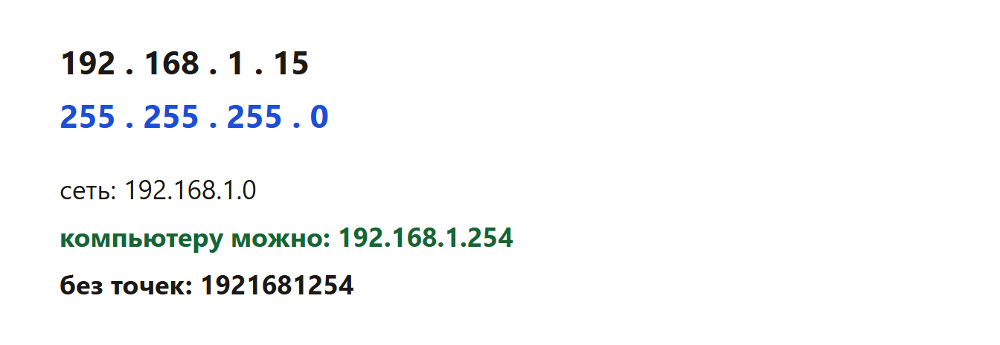
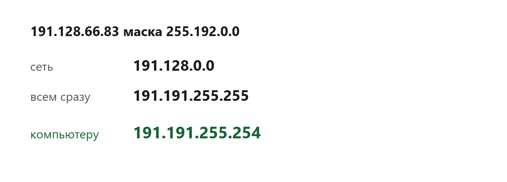

Дают IP-адрес компьютера и маску сети. Нужно найти адрес сети, самый большой адрес компьютера или число адресов.
Маска показывает, какая часть адреса — это сеть, а какая — номер компьютера внутри сети. Где в маске стоят единицы, бит относится к сети. Где нули — к компьютеру.
Узел 192.168.1.15, маска 255.255.255.0.

Сеть: 192.168.1.0. Широковещательный: 192.168.1.255. Самый большой адрес компьютера: 192.168.1.254.
В ответе без точек: 1921681254.
Узел 191.128.66.83, маска 255.192.0.0.

Ответ без точек: 191191255254.
Адрес сети — поразрядное И адреса и маски. Широковещательный адрес — там, где в маске были нули, ставят единицы. Наибольший адрес компьютера — широковещательный минус один. В ответ точки убирают, нули внутри байта оставляют.
В программе байты — список из четырёх чисел. Меняют строку адреса и строку маски.
Каждый фрагмент запускается отдельно. В конце он печатает ответ. Комментарии на русском говорят, какая строка за что отвечает.
def max_host(ip, mask):
ip_b = [int(part) for part in ip.split(".")]
mask_b = [int(part) for part in mask.split(".")]
network = [a & b for a, b in zip(ip_b, mask_b)]
broadcast = [n | (255 - m) for n, m in zip(network, mask_b)]
# Минус 1 у широковещательного: это наибольший адрес компьютера.
broadcast[3] -= 1
for i in range(3, 0, -1):
if broadcast[i] < 0:
broadcast[i] += 256
broadcast[i - 1] -= 1
return "".join(str(part) for part in broadcast)
ip = "192.168.1.15" # МЕНЯТЬ: адрес узла
mask = "255.255.255.0" # МЕНЯТЬ: маска
print(max_host(ip, mask))Что менять, если условие другое.
Программа печатает 1921681254.
def max_host(ip, mask):
ip_b = [int(part) for part in ip.split(".")]
mask_b = [int(part) for part in mask.split(".")]
network = [a & b for a, b in zip(ip_b, mask_b)]
broadcast = [n | (255 - m) for n, m in zip(network, mask_b)]
broadcast[3] -= 1
for i in range(3, 0, -1):
if broadcast[i] < 0:
broadcast[i] += 256
broadcast[i - 1] -= 1
return "".join(str(part) for part in broadcast)
print(max_host("191.128.66.83", "255.192.0.0"))Что менять, если условие другое.
Программа печатает 191191255254.
mask = "255.255.255.0" # МЕНЯТЬ
bits = "".join(f"{int(part):08b}" for part in mask.split("."))
print(bits.count("0")) # нули маски — номер компьютераЧто менять, если условие другое.
Программа печатает 8.